“Flutter WP News” Documentation by “JideGuru” v1.0
“Flutter WP News”
Thank you for purchasing my theme. If you have any questions that are beyond the scope of this help file, please feel free to email via my user page contact form here. Thanks so much!
Table of Contents
- Introduction
- Folder Structure
- Setting up Futter Development Environment
- Firebase and Onesignal
- Setup and Run the source code
- Setup Wordpress notification
- Generate a release version of app
- Conclusion
A) Introduction - top
WP News - Flutter WordPress News Blog app is a wordpress blog app that can be used to make blogs into apps. It was Made Using the Flutter Framework
B) Folder Structure - top
The application folder contain the following Folders and structure
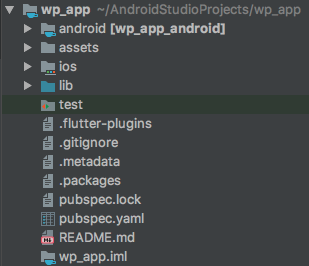
C) Setting up Futter Development Environment - top
Before you start
This documentation was created to help you with the installation and configuration of WP News application. Please, read it carefully to avoid most of potential problems with incorrect configuration.
This chapter describes how to install Flutter, Android Studio and Xcode(to build for ios only for people with MacOS X). You don't have to install Android Studio, but it's better. The project can be built without Android Studio, using VSCode or IntelliJ with Gradle build system.
Set up Android Studio
For more Information
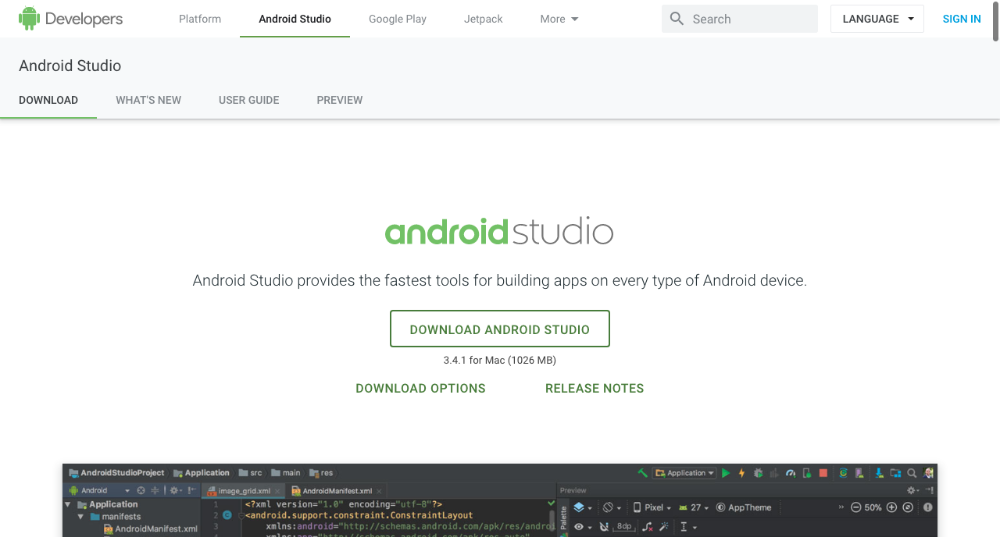
For Windows
Download
.exe file from here and launch. After launching, follow the installation guide.
For Mac
1. Download .dmg file from here.
2. Launch the Android Studio DMG file.
3. Drag and drop Android Studio into the Applications folder, then launch Android Studio.
4. Select whether you want to import previous Android Studio settings, then click OK.
5. The Android Studio Setup Wizard guides you through the rest of the setup, which includes downloading Android SDK components that are required for development.
For Linux
1. Download .zip file from here and launch. After launching, drag the Android Studio into the Applications folder.
2. Unpack the .zip file you downloaded to an appropriate location for your applications, such as within /usr/local/ for your user profile, or /opt/ for shared users.
3. Select whether you want to import previous Android Studio settings or not, then click OK.
4. The Android Studio Setup Wizard guides you through the rest of the setup, which includes downloading Android SDK components that are required for development.
Set up Xcode (Requires MacOS X)
For more Information
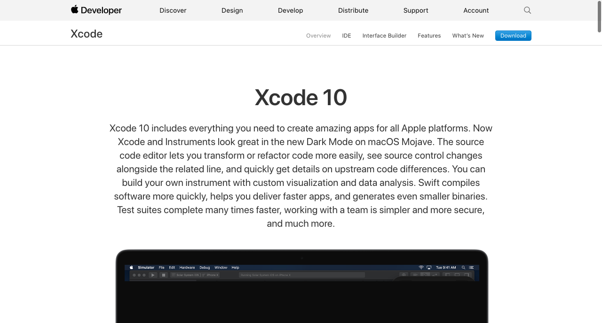
Open the App Store
Search for Xcode
Install and Launch Xcode
Set up Flutter SDK
For more Information
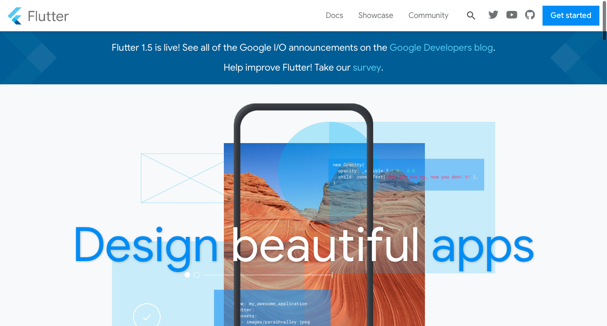
For Windows
Download .zip file from here
Extract the zip file and place the contained flutter in the desired installation location for the Flutter SDK (eg. C:\src\flutter; do not install Flutter in a directory like C:\Program Files\ that requires elevated privileges).
Locate the file flutter_console.bat inside the flutter directory. Start it by double-clicking.
You are now ready to run Flutter commands in the Flutter Console! Read More about updating your path here
For MacOS X
Download .zip file from here
Extract the file in the desired location
Update your path then run flutter doctor
For Linux
Download .tar.xz file from here
Extract the file in the desired location
Update your path then run flutter doctor
Set up a Code Editor to run flutter
For more Information
 Android Studio / IntelliJ
Start Android Studio
Open plugin preferences (Preferences > Plugins on macOS, File > Settings > Plugins on Windows & Linux).
Select Browse repositories, select the Flutter plugin and click Install.
Click Yes when prompted to install the Dart plugin.
Click Restart when prompted.
Android Studio / IntelliJ
Start Android Studio
Open plugin preferences (Preferences > Plugins on macOS, File > Settings > Plugins on Windows & Linux).
Select Browse repositories, select the Flutter plugin and click Install.
Click Yes when prompted to install the Dart plugin.
Click Restart when prompted.
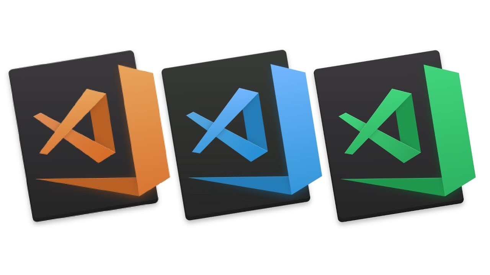
VSCode
Start VS Code.
Invoke View > Command Palette….
Type “install”, and select Extensions: Install Extensions.
Type “flutter” in the extensions search field, select Flutter in the list, and click Install. This also installs the required Dart plugin.
D) Connect Firebase to OneSignal - top
Goto firebase.com and login to your account.
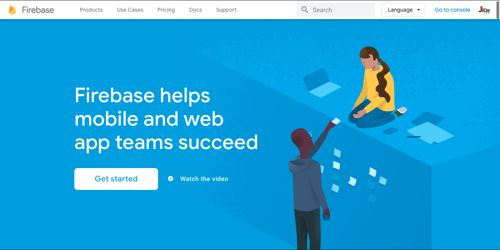
Click on add project to create a new project
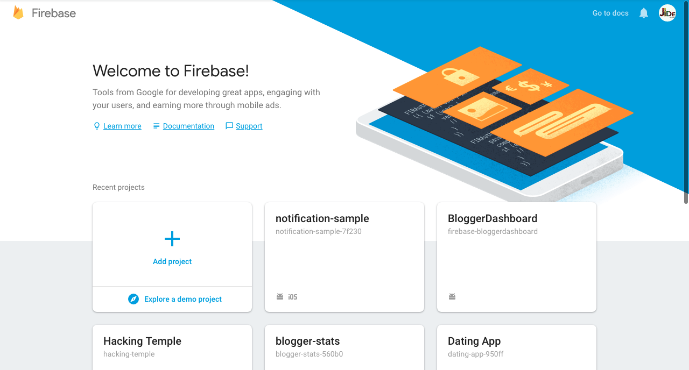
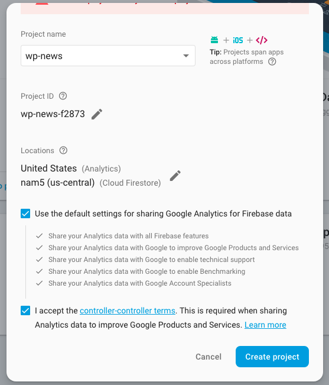
Now your firebase project has been created. TO create a OneSignal account navigate to onesignal.com and create an account.
Click on add app to create a new project
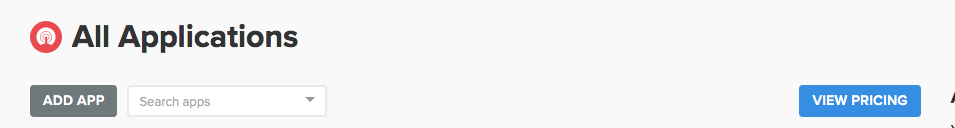
After creation a pop up box will appear for configuration. Choose the platform(s) you want which can be either Android or iOS or both
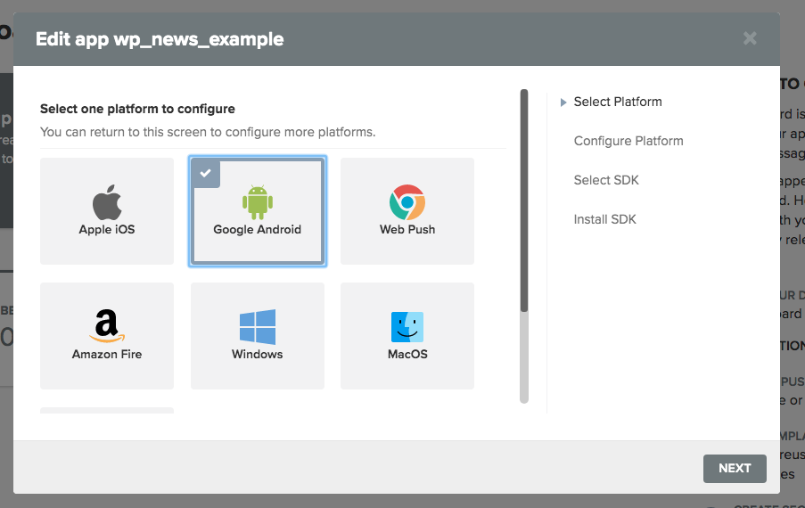
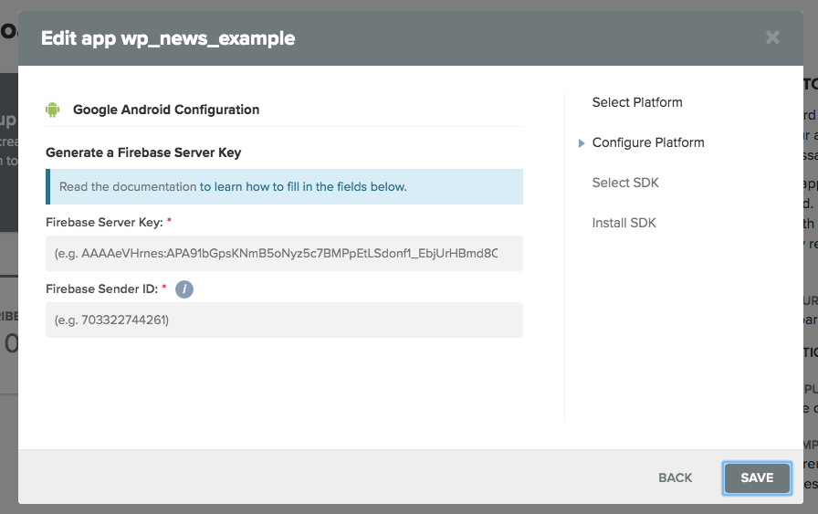
Now go back to your firebase and copy Sender ID and Server key and paste into the onesignal pop up.
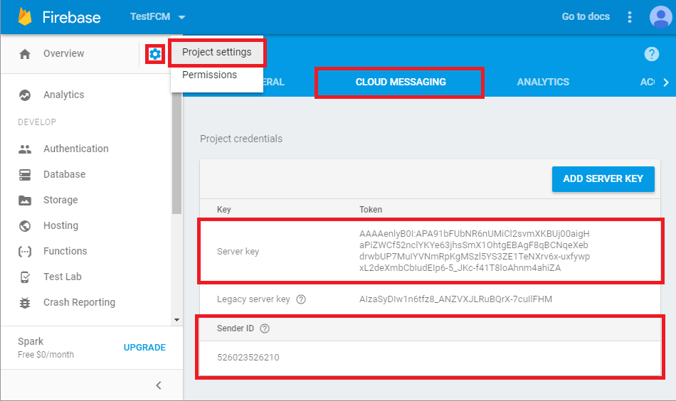
After that just close the popup because the SDK as already been setup in the app's source code
E) Setup and Run the source code - top
To run the app the below steps should be follow carefully. please pay close attention
Open the source code in your prefered editor(i will be using android studio).
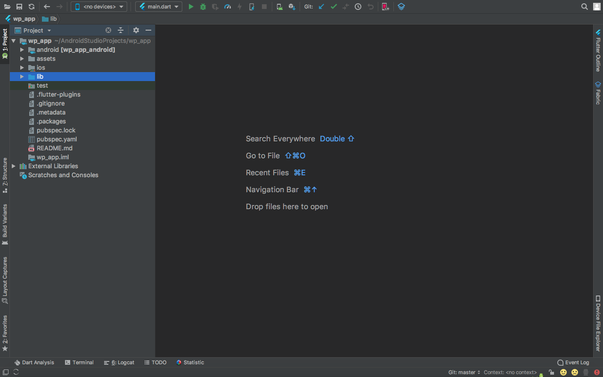
NOTE: The flutter files are in the "lib" folder.
To edit some usual variables like name, blog address and so on, open the constants.dart file in lib/util.
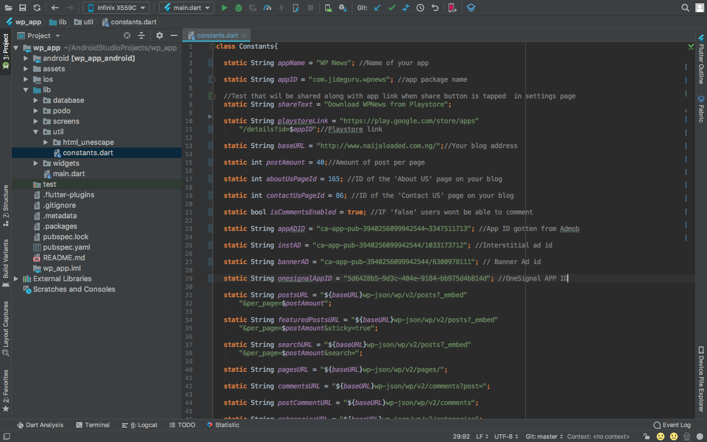
EDIT to your taste.
One signal appID can be gotten from the dashboard. Goto app settings and Keys&IDs
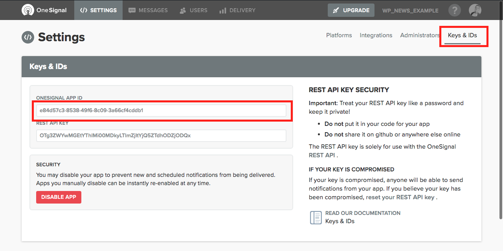
Note you also need to put the onesignal ID in the android app gradle.
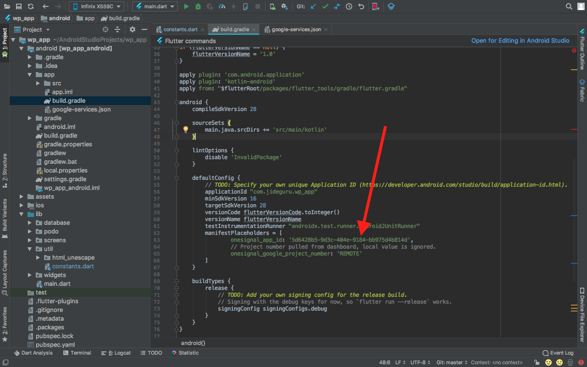
To change app color. Open the main.dart present in the lib folder.
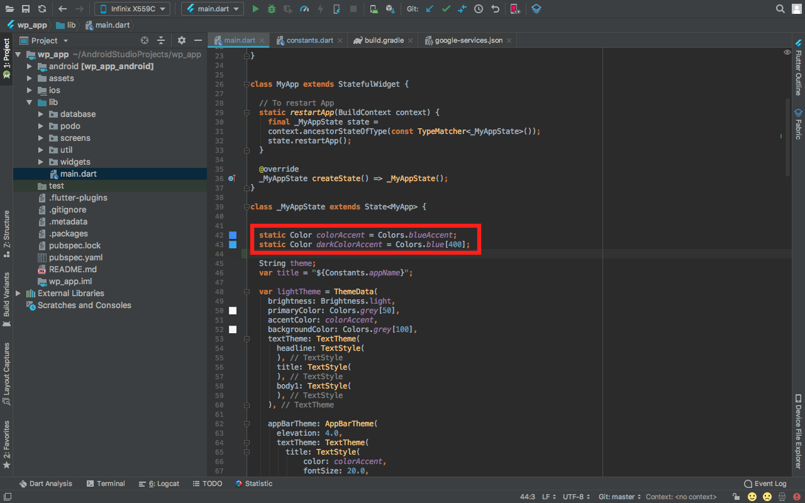
To change app icon. Replace logo.png in the assets folder
F) Setup Wordpress notification - top
Setting up notification from wordpress so we get notified everytime a new post has been made!
Login to Wordpress Admin Panel
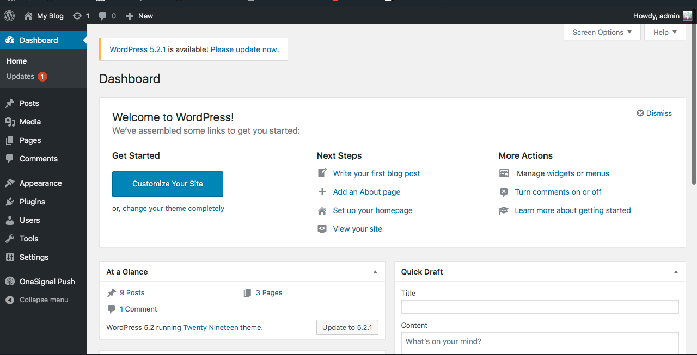
Navigate to plugins and search for "Onesignal" then install
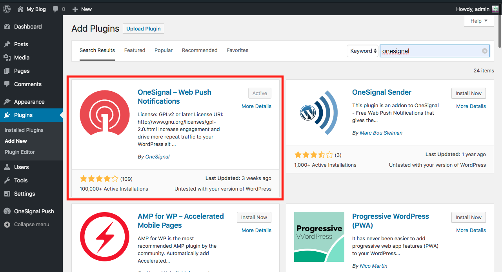
After installing, goto "OneSignal Push".
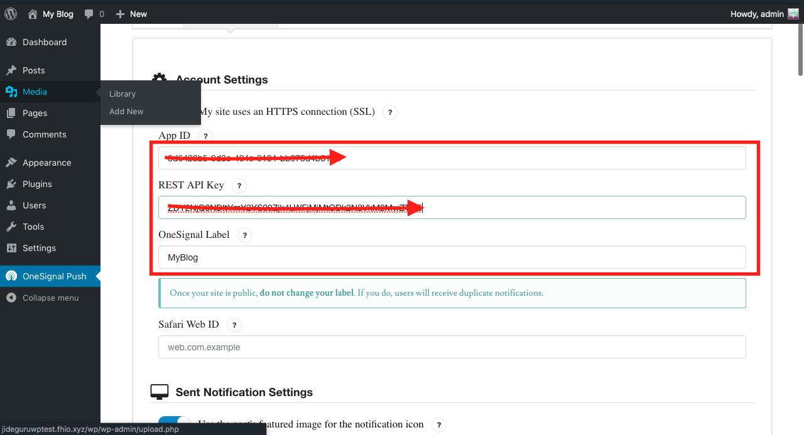
Add appid and Rest API key from onesignal.
Enable Mobile Push.

G) Generate a release version of app - top
To generate a release APK after every nessacary setup, run "flutter build apk". And for iOS READ MORE HERE
H) Conclusion - top
Once again, thank you so much for purchasing this app. As I said at the beginning, I'd be glad to help you if you have any questions relating to this app. No guarantees, but I'll do my best to assist. If you have a more general question relating to the app on Codecanyon, you might consider visiting the forums and asking your question in the "Item Discussion" section.
JideGuru
Go To Table of Contents